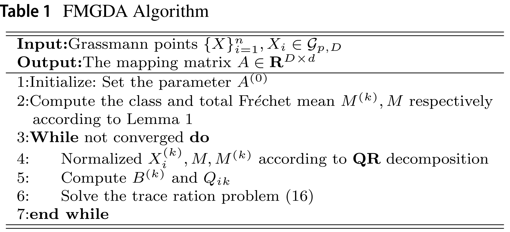

写在前面 前面介绍了一篇Grassmann流形上的投影度量学习，下面介绍一个关于判别分析的Grassmann流形推广工作。
线性判别分析 判别准则为
arg min a a T S b a a T S w a \arg\min_{a}\frac{a^TS_ba}{a^TS_wa}
arg a min a T S w a a T S b a
其中类间散度S b S_b S b S w S_w S w
S b = ∑ k = 1 c n k ( μ ( k ) − μ ) ( μ ( k ) − μ ) T S w = ∑ k = 1 c ∑ i = 1 n k n k ( x i ( k ) − μ ( k ) ) ( x i ( k ) − μ ( k ) ) T \begin{aligned}
S_b&=\sum_{k=1}^c n_k(\mu^{(k)}-\mu)(\mu^{(k)}-\mu)^T\\
S_w&=\sum_{k=1}^c \sum_{i=1}^{n_k} n_k(x_i^{(k)}-\mu^{(k)})(x_i^{(k)}-\mu^{(k)})^T
\end{aligned}
S b S w = k = 1 ∑ c n k ( μ ( k ) − μ ) ( μ ( k ) − μ ) T = k = 1 ∑ c i = 1 ∑ n k n k ( x i ( k ) − μ ( k ) ) ( x i ( k ) − μ ( k ) ) T
通过简单的变形，分子分母可换为
a T S b a = ∑ k = 1 c n k a T ( μ ( k ) − μ ) ( μ ( k ) − μ ) T a = ∑ k = 1 c n k ∥ a T μ ( k ) − a T μ ∥ 2 2 = ∑ k = 1 c n k δ E ( a T μ ( k ) , a T μ ) a T S w a = ∑ k = 1 c ∑ i = 1 n k n k ( x i ( k ) − μ ( k ) ) ( x i ( k ) − μ ( k ) ) T = ∑ k = 1 c ∑ i = 1 n k n k ∥ a T x i ( k ) − a T μ ( k ) ∥ 2 2 = ∑ k = 1 c ∑ i = 1 n k n k δ E ( a T x i ( k ) , a T μ ( k ) ) \begin{aligned}
a^TS_ba&=\sum_{k=1}^c n_ka^T(\mu^{(k)}-\mu)(\mu^{(k)}-\mu)^Ta\\
&=\sum_{k=1}^c n_k\|a^T\mu^{(k)}-a^T\mu\|_2^2\\
&=\sum_{k=1}^c n_k\delta_E(a^T\mu^{(k)},a^T\mu)\\
a^TS_wa&=\sum_{k=1}^c \sum_{i=1}^{n_k} n_k(x_i^{(k)}-\mu^{(k)})(x_i^{(k)}-\mu^{(k)})^T\\
&=\sum_{k=1}^c \sum_{i=1}^{n_k} n_k\|a^Tx_i^{(k)}-a^T\mu^{(k)}\|_2^2\\
&=\sum_{k=1}^c \sum_{i=1}^{n_k} n_k\delta_E(a^Tx_i^{(k)},a^T\mu^{(k)})\\
\end{aligned}
a T S b a a T S w a = k = 1 ∑ c n k a T ( μ ( k ) − μ ) ( μ ( k ) − μ ) T a = k = 1 ∑ c n k ∥ a T μ ( k ) − a T μ ∥ 2 2 = k = 1 ∑ c n k δ E ( a T μ ( k ) , a T μ ) = k = 1 ∑ c i = 1 ∑ n k n k ( x i ( k ) − μ ( k ) ) ( x i ( k ) − μ ( k ) ) T = k = 1 ∑ c i = 1 ∑ n k n k ∥ a T x i ( k ) − a T μ ( k ) ∥ 2 2 = k = 1 ∑ c i = 1 ∑ n k n k δ E ( a T x i ( k ) , a T μ ( k ) )
Grassmann流形投影 类似于PML一样，对流形点X ∈ G ( p , D ) X\in\mathcal G(p,D) X ∈ G ( p , D ) f ( X , A ) = A T X f(X,A)=A^TX f ( X , A ) = A T X G ( p , D ) → G ( p , d ) \mathcal G(p,D)\to\mathcal G(p,d) G ( p , D ) → G ( p , d ) A T X ∉ G ( p , d ) A^TX\notin\mathcal G(p,d) A T X ∈ / G ( p , d ) A T X A^TX A T X orth ( A T X ) \text{orth}(A^TX) orth ( A T X ) ( A T X ′ ) (A^TX^\prime) ( A T X ′ )
Grassmann流形可嵌入到由对称正半定矩阵组成的空间中。对于点X ∈ G ( p , D ) X\in\mathcal G(p,D) X ∈ G ( p , D ) Π ( X ) = X X T ∈ S + D \Pi(X)=XX^T\in\mathcal S_+^D Π ( X ) = X X T ∈ S + D S + D \mathcal S_+^D S + D
δ P ( X 1 , X 2 ) = 1 2 ∥ Π ( X 1 ) − Π ( X 2 ) ∥ F 2 = 1 2 ∥ X 1 X 1 T − X 2 X 2 T ∥ F 2 \begin{aligned}
\delta_P(X_1,X_2)&=\frac{1}{\sqrt 2} \|\Pi(X_1)-\Pi(X_2)\|_F^2\\
&=\frac{1}{\sqrt 2} \|X_1X_1^T-X_2X_2^T\|_F^2
\end{aligned}
δ P ( X 1 , X 2 ) = 2 1 ∥ Π ( X 1 ) − Π ( X 2 ) ∥ F 2 = 2 1 ∥ X 1 X 1 T − X 2 X 2 T ∥ F 2
有了距离后可计算n n n
M ⋆ = arg min M ∑ i = 1 n δ P ( X i , M ) M^\star = \arg\min_M \sum_{i=1}^n \delta_P(X_i,M)
M ⋆ = arg M min i = 1 ∑ n δ P ( X i , M )
该问题具有解析解：∑ i = 1 n X i X ) i T \sum_{i=1}^nX_iX)i^T ∑ i = 1 n X i X ) i T p p p
基于Frechet均值的Grassmann判别分析 类似于欧式空间的线性判别分析，下面给出Grassmann流形上的判别分析。判别准则需同时满足以下两个条件：
对应改变线性判别分析目标函数
使用Frechet均值M M M μ \mu μ
使用投影距离δ P \delta_P δ P δ E \delta_E δ E
使用流形间的投影f ( X , A ) f(X,A) f ( X , A ) a T x a^Tx a T x
d b = ∑ k = 1 c n k δ P ( f ( M ( k ) , A ) , f ( M , A ) ) = ∑ k = 1 c n k ∥ A T M ′ ( k ) M ′ ( k ) T A − A T M ′ M ′ T A ∥ F 2 d w = ∑ k = 1 c ∑ i = 1 n k n k δ P ( f ( X i ( k ) , A ) , f ( M ( k ) , A ) ) = ∑ k = 1 c n k ∥ A T X i ′ ( k ) X i ′ ( k ) T A − A T M ′ ( k ) M ′ ( k ) T A ∥ F 2 \begin{aligned}
d_b&=\sum_{k=1}^c n_k\delta_P(f(M^{(k)},A),f(M,A))\\
&=\sum_{k=1}^c n_k\|A^TM^{\prime(k)}M^{\prime(k)T}A-A^TM^{\prime}M^{\prime T}A\|_F^2\\
d_w&=\sum_{k=1}^c \sum_{i=1}^{n_k} n_k\delta_P(f(X_i^{(k)},A),f(M^{(k)},A))\\
&=\sum_{k=1}^c n_k\|A^TX_i^{\prime(k)}X_i^{\prime(k)T}A-A^TM^{\prime(k)}M^{\prime(k)T}A\|_F^2\\
\end{aligned}
d b d w = k = 1 ∑ c n k δ P ( f ( M ( k ) , A ) , f ( M , A ) ) = k = 1 ∑ c n k ∥ A T M ′ ( k ) M ′ ( k ) T A − A T M ′ M ′ T A ∥ F 2 = k = 1 ∑ c i = 1 ∑ n k n k δ P ( f ( X i ( k ) , A ) , f ( M ( k ) , A ) ) = k = 1 ∑ c n k ∥ A T X i ′ ( k ) X i ′ ( k ) T A − A T M ′ ( k ) M ′ ( k ) T A ∥ F 2
对应的判别模型为
max A d b d w \max_A \frac{d_b}{d_w}
A max d w d b
迭代优化 使用QR分解的正交矩阵部分作为投影点的正交部分。下面以A T X i ′ ( k ) A^TX_{i}^{\prime (k)} A T X i ′ ( k )
A T X i ( k ) = Q x i R x i A^TX_i^{(k)}=Q_{x_i}R_{x_i}
A T X i ( k ) = Q x i R x i
显然有Q x i = A T X i ′ ( k ) Q_{x_i}=A^TX_i^{\prime (k)} Q x i = A T X i ′ ( k ) X i ′ ( k ) = X i ( k ) R x i − 1 X_i^{\prime (k)}=X_i^{(k)}R_{x_i}^{-1} X i ′ ( k ) = X i ( k ) R x i − 1 Q x i Q_{x_i} Q x i A T X i ( k ) A^TX_i^{(k)} A T X i ( k )
记
B ( k ) = M ′ ( k ) M ′ ( k ) T − M ′ M ′ T Q i k = X i ′ ( k ) X i ′ ( k ) T − M ′ ( k ) M ′ ( k ) T \begin{aligned}
B^{(k)}&=M^{\prime (k)}{M^{\prime (k)T}}-M^{\prime } M^{\prime T}\\
Q_{ik}&=X_i^{\prime (k)}{X_{i}^{\prime (k)T}}-M^{\prime (k)}{M^{\prime (k)T}}\\
\end{aligned}
B ( k ) Q i k = M ′ ( k ) M ′ ( k ) T − M ′ M ′ T = X i ′ ( k ) X i ′ ( k ) T − M ′ ( k ) M ′ ( k ) T
有
d b = ∑ k = 1 K n k ∥ A T M ′ ( k ) M ′ ( k ) T A − A T M ′ M ′ T A ∥ F 2 = ∑ k = 1 K n k ∥ A T B ( k ) A ∥ F 2 = ∑ k = 1 K n k tr ( A T B ( k ) A A T B ( k ) A ) d w = ∥ A T X i ′ ( k ) X i ′ ( k ) T A − A T M ′ ( k ) M ′ ( k ) T A ∥ F 2 = ∑ k = 1 K ∑ i = 1 n k n k ∥ A T Q i k A ∥ F 2 = ∑ k = 1 K ∑ i = 1 n k n k tr ( A T Q i k A A T Q i k A ) \begin{aligned}
d_b&=\sum_{k=1}^K n_k\| A^TM^{\prime (k)}M^{\prime (k)T}A-A^TM^{\prime} M^{\prime T}A\| _F^2\\
&=\sum_{k=1}^K n_k\| A^T B^{(k)}A\|_F^2\\
&=\sum_{k=1}^K n_k\text{tr}(A^TB^{(k)}AA^TB^{(k)}A) \\
d_w &=\| A^T X_i^{\prime (k)} X_{i}^{\prime (k)T}A-A^TM^{\prime (k)}M^{\prime (k)T}A\| _F^2\\
&=\sum_{k=1}^K \sum_{i=1}^{n_k}n_k\| A^TQ_{ik}A\| _F^2\\
&=\sum_{k=1}^K \sum_{i=1}^{n_k}n_k \text{tr} (A^TQ_{ik}AA^TQ_{ik}A)
\end{aligned}
d b d w = k = 1 ∑ K n k ∥ A T M ′ ( k ) M ′ ( k ) T A − A T M ′ M ′ T A ∥ F 2 = k = 1 ∑ K n k ∥ A T B ( k ) A ∥ F 2 = k = 1 ∑ K n k tr ( A T B ( k ) A A T B ( k ) A ) = ∥ A T X i ′ ( k ) X i ′ ( k ) T A − A T M ′ ( k ) M ′ ( k ) T A ∥ F 2 = k = 1 ∑ K i = 1 ∑ n k n k ∥ A T Q i k A ∥ F 2 = k = 1 ∑ K i = 1 ∑ n k n k tr ( A T Q i k A A T Q i k A )
因此可以考虑固定内部A ( t − 1 ) A ( t − 1 ) T A^{(t-1)}A^{(t-1)T} A ( t − 1 ) A ( t − 1 ) T A A A
B ~ ( t − 1 ) = ∑ k = 1 K n k B ( k ) A ( t − 1 ) A ( t − 1 ) T B ( k ) Q ~ ( t − 1 ) = ∑ k = 1 K ∑ i = 1 n k n k Q i k A ( t − 1 ) A ( t − 1 ) T Q i k \begin{aligned}
{\widetilde{B}}^{(t-1)}= & {} \sum _{k=1}^{K}n_k{B^{(k)}}A^{(t-1)}{A^{(t-1)T}}B^{(k)} \\
{\widetilde{Q}}^{(t-1)}= & {} \sum _{k=1}^{K}\sum \limits _{i=1}^{n_k}n_k Q_{ik}A^{(t-1)}{A^{(t-1)T}}Q_{ik}
\end{aligned}
B ( t − 1 ) = Q ( t − 1 ) = k = 1 ∑ K n k B ( k ) A ( t − 1 ) A ( t − 1 ) T B ( k ) k = 1 ∑ K i = 1 ∑ n k n k Q i k A ( t − 1 ) A ( t − 1 ) T Q i k
在第t t t t − 1 t-1 t − 1 A ( t − 1 ) A^{(t-1)} A ( t − 1 )
max A tr ( A T B ~ ( t − 1 ) A ) tr ( A T Q ~ ( t − 1 ) A ) \max_A\frac{\text{tr}(A^T{\widetilde{B}}^{(t-1)}A)}{\text{tr}(A^T{\widetilde{Q}}^{(t-1)}A)}
A max tr ( A T Q ( t − 1 ) A ) tr ( A T B ( t − 1 ) A )
该问题为一个迹比率优化问题，采用文章的方法可高效求解判别模型。整体算法流程图如下：

小结 最近有在关注流形方面的文章，找了几个感兴趣的，后面会陆续整理出来。这篇文章是拿着投影度量工具改造线性判别分析。不过始终觉得投影点取正交子空间这个操作有些gap，有没有一些映射直接保证流形结构？其次，文章改完之后对算法描述较少，这个里面有上升空间。
References